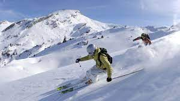

Another absolute fan favorite is skiing for the absolute rush this activity consistently creates. Obviously, only really offered in the Winter for the simple fact that snow only really falls during this time of year (in Montana) to be able to shred and do some of the most amazing terrain exploring that you might ever do in your life. This is also the home to many bucketlist items that fall all across the world, pretty much wherever snow falls, there is a mountain. This activity is completely possible for people of all skill levels, whether you are a novice skier or a seasoned expert, every mountain has something that suits you. Much like cliff jumping, it can get very dangerous at times which means to stay within your abilities and always ski with a buddy but challenge yourself because it is amazing what you will be able to achieve after a very small amount of time put into it. Now, get out there and shred the gnar!